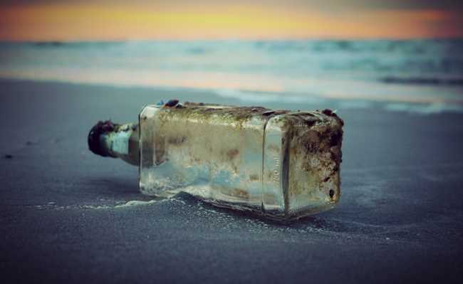

PREFERÊNCIA POR CONSUMIR PRODUTOS BIODEGRADÁVEIS
Escrito Por: Alex Nascimento
Com o aumento da consciência das pessoas em escala mundial, os produtos biodegradáveis vêm ganhando importância com o intuito de conservar o meio ambiente nessa última década, essa opção vem se popularizando por conta de ser produtos que não impactam com a mesma intensidade que os produtos normais, já que eles se decompõem de forma mais rápida e não tóxica para o meio ambiente. Eles são indispensáveis para a manutenção da biosfera em perfeito funcionamento, já que ajudam a permitir que a vida da forma que conhecemos hoje permaneça existindo.
Em geral, os resultados da decomposição desses produtos são dióxido de carbono (CO2), água e material biológico. O que confere a eles a capacidade de serem reintegrados à natureza gerando o menor impacto possível aos seres vivos e ao meio ambiente. Os produtos biodegradáveis são de origem natural e sua decomposição não agrava o meio ambiente, podendo, até mesmo, ser benéfica por ser uma forma de energia para microrganismos. Os não biodegradáveis são, em geral, sintéticos de origem do petróleo e compostos por metais pesados, como no caso das pilhas comuns. Desde seu processo de produção liberam produtos tóxicos ao meio ambiente, poluindo o ar, as águas e o solo. Esses produtos podem se bi acumular em seres vivos da base da cadeia alimentar até chegar ao ser humano, causando doenças, entre estas o câncer.
Assim, produtos biodegradáveis oferecem a vantagem de apresentar decomposição completa e bem mais rápida, contribuindo para o menor acúmulo de lixo no planeta. A partir da conscientização ambiental, que pode ser promovida por ações educacionais nesse sentido, é possível zelar pela manutenção do nosso planeta, de forma a desenvolver hábitos de respeito ao meio ambiente. Nesse contexto, os produtos biodegradáveis mostram que é possível desenvolver-se com qualidade e respeito à vida, sem que haja mais perdas para o nosso desenvolvimento.
Referências Bibliográficas:
O que é produto biodegradável e qual sua importância para o meio ambiente?. TSA Ambiental. Disponível em: "http://www.tsambientali.com.br/o-que-e-produto-biodegradavel-e-qual-sua-importancia-para-o-meio-ambiente/". Acesso em: 05 de abril de 2020.
Porque usar produtos biodegradáveis. Neo Clean. Disponível em: "https://neoclean.com.br/porque-usar-produtos-biodegradaveis/. Acesso em: 07 de abril de 2020.